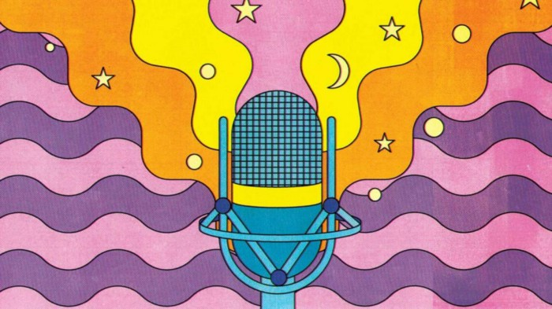
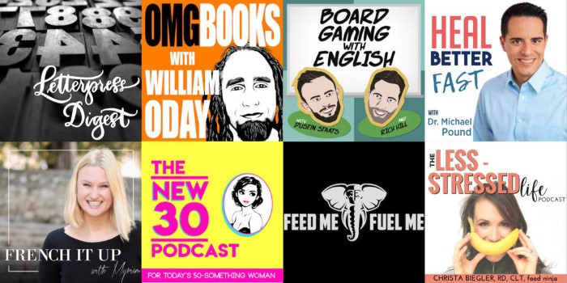

You Should Start A Podcast : Effective Content Delivery

Content creation and marketing comes in many different shapes and sizes nowadays. Creators are promoting their ideas through a lot of options like blog posts, social media updates, video visuals, slide decks and even more.
But the most effective, i will surely agree to audio content delivery.
Audio is being used in clever ways to fit into the content delivery domain. Podcasts seem to be a more enriched way to reach more and direct a personal relationship with audience.
Well-conceived podcasts are an effective, portable, convenient and intimate way to deliver and produce content, and to build ongoing relationships with your clients, employees and constituents.
Let me tell you 4 Potential benefits of podcasts, i considered :
1. Podcasts make information personal.
In a podcast, the content is communicated or delivered directly to you, the listener; that means verbally. That’s a much more intimate way of getting informed than reading a email or blog posts.
2. Podcast is a time-efficient form of communication.
You can listen to a podcast while do other activities, like at work or at home, even while your commute to places. I prefer podcast mostly because of this reason; while studying or working on projects, i usually listen to growth enhancers like Ted Talks Daily or On Purpose with Jay Shetty. Thus in favor of saving time and improving productivity, podcasts are apt.
3. Podcast are convenient and easy to consume.
Podcasts are delivered digitally and many more podcasting platforms are coming up since its demand increases, thus cuts down a lot of costs compare to video contents and print media. They can be easily archived and update quickly by the broadcaster. Once a listener subscribe to a podcast feed, new updates in content are automatically synced and listen to your convenience.
4. Podcasting is an on-demand technology.
Listeners decide what they want to hear, and when they want to hear it. On one hand, this means you’re competing for their eyes and ears. On the other hand, this means that if they are subscribing to your podcasts, there’s an excellent chance they’re actually getting the information you’re providing to them.
Not the least, There are many more reasons to start Podcasting:
5. To build an audience.
Just like with a blog, a podcast is a way for you to build an audience. As your podcast grows in popularity, the size of your audience increases. Not everyone who listens to your show will come back for more, but the ones who like your style and your content will become loyal listeners. They will recommend your show to others, and over time you will build a tribe of fans eager to hear your next episode.
6. To increase the value and size of your network.
If you host a podcast in which you interview various guests for your show, one of the most obvious benefit of doing so is that you get to expand your network. A podcast is a great platform to leverage to reach out to people you might not have been able to otherwise. As your audience grows in size, your ability to reach out to the high profile experts in your industry increases.
7. You can make money from your show.
A podcast doesn’t have to be a hobby. There are ways you can make money from your show. You can monetize your podcast. If your download numbers are high enough, you can charge sponsors to be mentioned on your show. You can also use your show to promote your own products or services (books, courses, or consulting, for example).
Hey there, people! I had recently launched a new podcast of my own, Spotify Podcast — Bookyard Audiobook & Summaries.
Bookyard is a Anchor hosted podcast which provides you with Audiobook Summaries from Books on Fiction, Growth and many more !
I am book reader since mid-school, but i had a habit of pen down the summary of each book i read. but after the last two years of listening podcast — i came up with idea of converting my hand written to audio summaries. thus by implementation of PDF to Voice format interpolation using Google Cloud : Text-to-Speech API, So that the summaries are converted to voice episodes for broadcasting.
If you’ve made it this far, congrats. That means you’re committed this. To reward you, I’ve got something that’ll make this process podcasting even easier.
So Set-forward to start your own podcast.
First of all, no one is like you. No one has the same experiences and stories to share. No one is going to podcast the way you do, and your vibe will attract your own tribe. We’re still in the early days of podcasting. So like I said, your timing is great.
Below, you’ll find the step by step easy method for starting a podcast using just your mobile device.
#1. Choose a Topic for your podcast.
Write down a list of twenty-five potential ideas for the podcast topic(s) you have in mind. if possible like to engage in episode wise topics, potential guest names, too, you were going to interview those people.
You don’t need to worry about the exact things — just come up with unique ideas.
#2. Pick a Show Title
The title of your podcast is one of the first things people see, even before they listen to a single word of your show. So naturally, this is a really important decision. It defines your branding, your artwork, what you say, how you share it, and many many more things. Just thing;
Who is the show for?
#3. Formatting your Podcast
Formatting refers to What’s your podcast going to look like?. Podcasts can take many forms: one-man shows, co-hosts, guests, call-in, etc.
I listen to a lot of podcasts and the most typical format is 2 or 3 hosts and sometimes one guest. I’ve never subscribed to a single-person podcast before because I’ve yet to find a single-person-talking podcast that is interesting enough to stick with… Two or three people chattering to each other is the most common format but it’s possible to take it too far. Stick to 2–3 people on your show.
#4. Get a Logo/Artwork
Your podcast is going to need some artwork — a square image that represents your show. As much as podcasting is an auditory medium, the graphical, visual element that represents your podcast plays an extremely important role.

It’s a really good idea to get a logo for your podcast. Sure, you could do it yourself on Canva if you really want. It’s all up to your choice.
#5. Choose a Podcast Hosting Platform.
As for me, before starting to recording episodes. I looked forward towards the best Podcast Hosting platform, and its diverse features. Sign up to a platform you wish, i wish is to join either Buzzsprout or Anchor.fm (check out the links to view the features).
For the last 6 months, i was using Anchor.fm . So i prefer to go with it.
In my instincts, Anchor provides a better user friendly mobile application with in built option for audio recording, sound library and episode. That means for beginners can even use your headphone or condenser mic to record podcast sessions and edit through there devices.
#6. Recording, Uploading, and Promoting
Before you press the record button, there are couple steps to prepare for your podcast.
Gear to get Started
A quality podcast will mean quality equipment.Sure, you can scrape by with a bare minimum setup. You can record a podcast with nothing more than your smartphone, but it’ll sound like just that — a phone call recorded on a mobile device.
Buy a microphone.
Audio quality begins and ends with a microphone. The better microphone you buy, the sharper your podcast will sound. And audio quality reigns supreme when a person’s podcast choices include heavyweights like WNYC, NPR, and ESPN.
If your prefer in creating a professional podcast, take a look on the Podcast Insight’s Equipment List
Outline A.K.A Scripts
Your best bet for a podcast that sounds organized and professional is to practice beforehand by figuring out what you’re going to say and coming up with an outline for your recording. You don’t have to go so far as to script things out. Just have a road map for where you’re headed and what you want to touch on.
Here’s a Sample Outline to Consider,
- Show intro (30–60 sec) : who you are, what you’re going to talk about.
- Intro Jingle (30–60 sec) : repeat for each show, create a brand awareness for your show
- Topic 1 (3 min-10min, in case of multiple topics you opt; go for the least time with maximum content delivery)
- Interlude (30 sec) : music, break or ads
- Topic 2 (3 min-10min)
- Closing remarks (2 min) : thank audience, guests, give a glimpse about next show.
- Closing Jingle (1 min) : i suggest same as that of intro jingle.
After you’ve finished recording, editing, and producing your podcast, you can upload it to hosting sites like Anchor, Buzzsprout and Soundcloud. Most of these platform performs distribution of your show to wide Podcast Directories like Google Podcasts, Breaker, Spotify, so on. Some of the Directories like Apple iTunes require manual submission.
Promotion
For promotion and sharing of your podcast, a lot will depend on the site where you upload. You can also share directly to Twitter, Facebook, and more, and you can embed the audio directly into your blog posts.

The ideal everything for podcasts
We get quite a kick out of learning the ideal length and frequency for a number of different types of content, and podcasting is no exception. There’s less research out there about podcasts, so what I couldn’t find, I ran the numbers myself from top-notch podcasts.
Maintaining an ideal timing, frequency and duration of each episode can have a vital role in improving your podcast stats.
#7. Monetize your Podcast
The most common way podcasts make money is through advertising or sponsorships. Companies may pay you money to have you read off a script or talk about their company in different parts of your podcast episodes.
This can be very rewarding, but at the same time, it’s hard to find sponsors when your show is just starting out. They want to know people are going to listen before they pay you.
I’d recommend starting with affiliate marketing (Amazon’s associate Program). that means you can generate income by recommending various product or by marketing your own product to the listeners. You can start with this kind of income generation from day 1, and even if you don’t have many listeners, a year from now when you do, you can see the clicks coming in.
If you wish to know more tactics to grow and market your podcast show, take a look on: Opinions by 50 Podcasters on there Growth Formula.
I Appreciate You!
I truly hope you enjoyed this tutorial about how to start a podcast.
Feel free to share this with your friends and colleagues who you think could benefit from this, too.
Lastly, if you still feel you need more help, you are free to contact me!